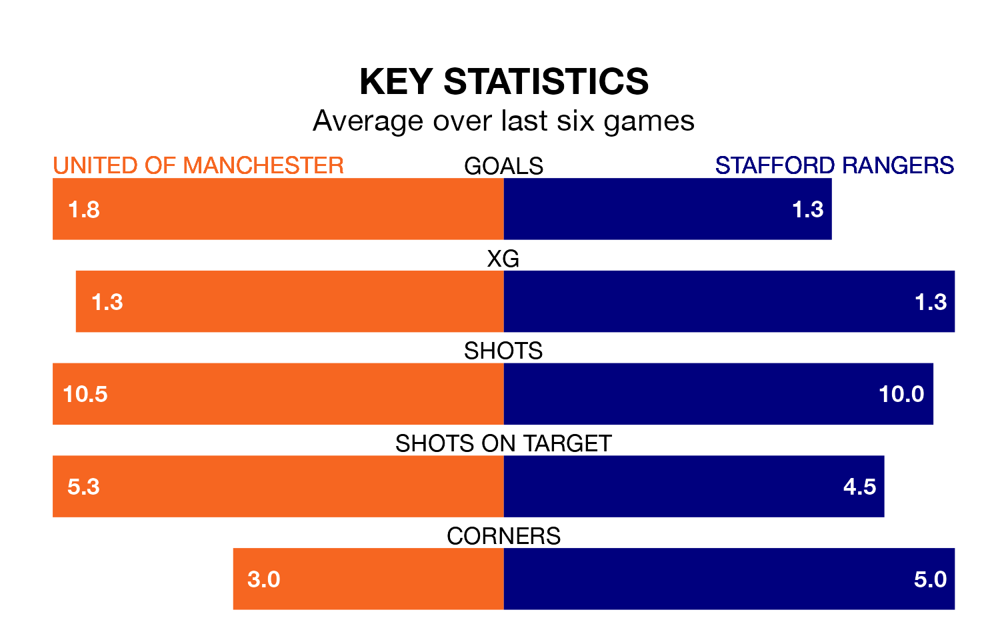

United of Manchester are heavy favourites to keep all three points at home in Saturday's kick-off against Stafford Rangers.
F.C. United, who sit 16th in Northern Premier League with 21 games played, are priced at 1.4 to seal victory at Broadhurst Park.
Sitting five places and 14 points behind them in the table, Stafford are 6.0 to win with *Betting Company*, while the draw is at 4.8.
United of Manchester are in mixed form in Northern Premier League, with two wins and two draws from their last six games.
With a win and five losses over that period, Stafford's form is worse – they have taken three points from 18, compared to F.C. United's eight.
In the last 10 years, United of Manchester and Stafford have played each other on nine occasions. They won four each, and they drew once.
On average, F.C. United scored 1.4 goals and Stafford 1.1 in those matches.
Their last meeting was on August 19, when Stafford won 3-2 at home.
With 19 goals in 21 games so far this season, Rangers are the league's lowest scorers with 0.9 goals per game. And they are conceding more than average, letting in 50 goals at a rate of 2.4 per game.
The home team are also below average scorers, with 1.5 goals per game, compared to a league average of 1.7. They have conceded 2.0 goals per game.
United of Manchester's last match was on December 16, a 4-0 loss against Worksop Town.
Stafford lost 1-0 against Whitby Town last time out, on Tuesday.
Updated: 15:16, 21/12/23